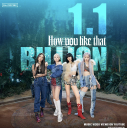
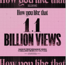
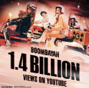
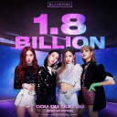

|  | 블랙핑크'How You Like That' MV 11억뷰 돌파..통산 6번째
스포츠 조선 | 2022.05.30 |
|  | 블랙핑크'HYLT' 11억뷰...안무영상이 MV 조회수 제쳤다
매일경제 스타투데이 | 2022.05.11 |
|  | 블랙핑크'붐바야' MV 14억뷰 돌파...6년이 지나도 꾸준한 인기
스타뉴스 | 2022.04.23 |
| 블랙핑크, 정규 1집 전곡 스포티파이 억대 스트리밍 달성
스포티비뉴스 | 2022.04.18 |
|
| 블랙핑크'Ice Cream' MV 7억뷰...통산 10번째
스포츠 경향 | 2022.02.13 |
|
|  | "최고기록!" 블랙핑크 '뚜두뚜두' MV 18억뷰
kbs 미디어 | 2022.02.03 |